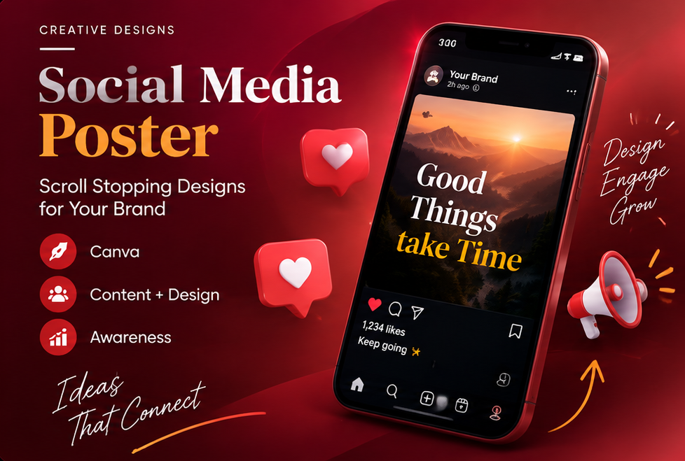
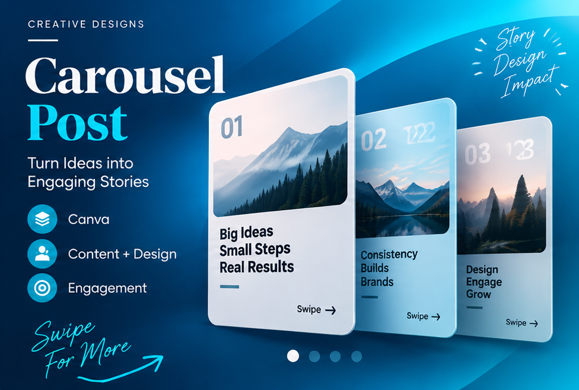
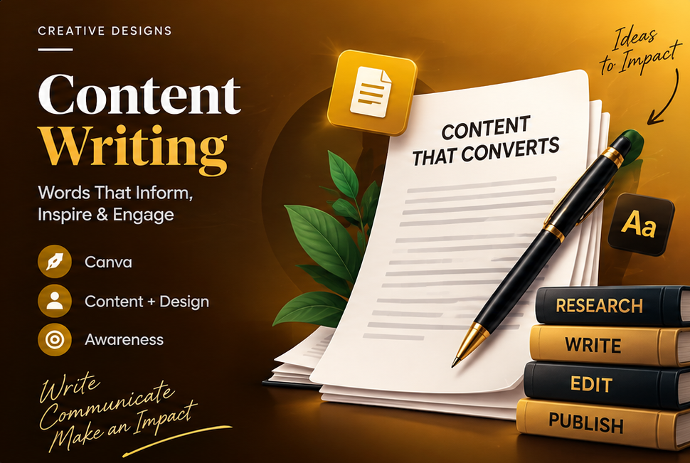

01. Cover Page
Creating engaging content • Building digital presence • Connecting with audiences
Begusarai, Bihar
ankitkumar163648@gmail.com
+91-7970602093
Growing audience
M.Sc. Agronomy
02. About Me
I am an M.Sc. Agronomy postgraduate with practical experience in social media management, content creation, content research, Canva designing, digital outreach, and promotional activities.
I have worked on social media posts, carousel content, polls, promotional creatives, captions, educational content, and audience engagement.
My agriculture background helps me understand technical and agriculture-related subjects and convert complex information into simple, engaging content for the target audience.
I am interested in building engaging digital content and helping brands improve their social media presence, audience engagement, and online communication.
03. What I Do
04, 05, 06, 07. My Journey
👉 Portfolio visuals: Poster | Carousel | Poll | Educational Post | Engagement Post
08. My Design Work
Visual storytelling tailored for awareness, engagement, and promotion.



09. Content Writing Samples
(Placeholder for actual educational article snippet. Focus is on clarity, farmer-friendly terminology, and actionable insights.)
"Modern farming isn't just about hard work; it's about smart work. 🌱 Discover how precision agriculture is transforming yields while saving water. Link in bio to read our latest case study! #AgriTech #SmartFarming #SustainableAgriculture"
"Struggling with pest management this season? 🐛 Let's break down the natural alternatives that protect your crops and the soil. Swipe left to learn 3 eco-friendly pest control methods. 👉 #CropCare #OrganicFarming #AgriTips"
11 & 12. Let's Connect
My M.Sc. Agronomy background gives me an understanding of agriculture and technical subjects, while my practical experience has helped me develop skills in content creation, social media, design, digital outreach and audience communication.
I can work on content from both perspectives:
Technical Understanding + Creative Communication
Social Media Executive